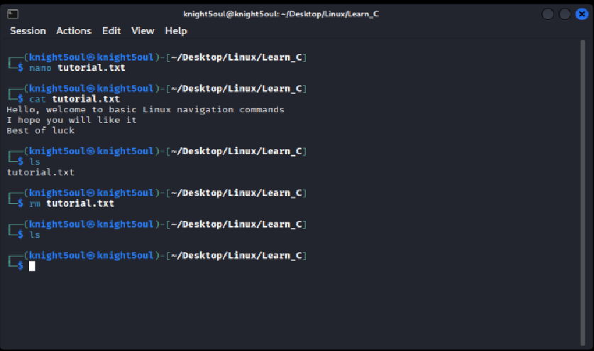

🐧 Linux Practical Basics
Exploring core Linux commands and terminal operations using Kali Linux.
Introduction
The Linux operating system is a powerful open-source platform that forms the backbone of most modern servers, embedded systems, and cybersecurity environments. For this session, we are using Kali Linux, a Debian-based distribution designed specifically for cybersecurity and ethical hacking, running inside a virtual machine for safe experimentation.
A virtual machine (VM) is a software-based emulation of a computer that allows you to run another operating system within your existing one. Using tools like VirtualBox or VMware, we can run Kali Linux without altering our main system, offering flexibility and isolation.
Debian-based systems such as Kali Linux, Ubuntu, and Linux Mint share a common set of terminal commands. This makes learning these commands universally useful across many environments.
Part 1: Movement and Location
Commands Used: pwd, ls, cd
We start by exploring how to check our current location in the file system, list directory contents, and move between folders. The pwd (Print Working Directory) command displays the absolute path of the current working directory, helping us know where we are in the file structure. The ls command lists the files and directories present in the current location. The cd (Change Directory) command allows us to navigate from one directory to another.
/home/knight5oul
user@kali:~$ ls
Desktop Documents Downloads Music Pictures
user@kali:~$ cd Desktop
In this step, we confirmed that we were in the home directory of user knight5oul, viewed the available directories using ls, and then moved to the Desktop directory using cd Desktop.
Part 2: Directory Creation and Inspection
Commands Used: ls, cd, mkdir
Once inside the Desktop, we used ls to check for any directories, then entered the “Linux” directory using cd Linux. Here, the mkdir (Make Directory) command was used to create a new folder named Learn_C. This directory joins the existing ones, Learn_A and Learn_B, helping us organize our workspace.
Linux Projects
user@kali:~/Desktop$ cd Linux
user@kali:~/Desktop/Linux$ ls
Learn_A Learn_B
user@kali:~/Desktop/Linux$ mkdir Learn_C
The mkdir command helps create directories for file organization. Using ls afterwards confirms the new folder’s presence. This reflects standard file management through the terminal.
Part 3: File Creation and Viewing
Commands Used: nano, cat
Inside the Learn_C directory, we used nano to create a text file named tutorial.txt. The Nano text editor is a simple and user-friendly command-line tool that allows direct editing of text files. After typing some content and saving it, we used the cat command to display the content of the file directly in the terminal.
(text entered and saved)
user@kali:~/Desktop/Linux/Learn_C$ cat tutorial.txt
The cat command quickly verifies the content of files and is particularly useful for reviewing configuration or script files without opening them in an editor.
Part 4: File Deletion and Verification
Command Used: rm
The rm command (Remove) is used to delete files permanently. Once a file is removed using this command, it does not go to a recycle bin; it is deleted from the file system. After removing the file, we used ls again to confirm that the file had been successfully deleted.
user@kali:~/Desktop/Linux/Learn_C$ ls
This process ensures that the directory Learn_C is now empty, which allows further cleanup or new file creation in subsequent steps.
Part 5: Directory Cleanup
Command Used: rmdir
To clean up the workspace, we navigated back to the Linux directory and listed its contents using ls. The rmdir command (Remove Directory) was then used to delete the two empty directories, Learn_A and Learn_B. Running ls again confirmed that only Learn_C remained.
Learn_A Learn_B Learn_C
user@kali:~/Desktop/Linux$ rmdir Learn_A Learn_B
user@kali:~/Desktop/Linux$ ls
Learn_C
The rmdir command is only applicable to empty folders. For directories containing files, the rm -r (recursive remove) command would be required.
Conclusion
In this Linux practical, we explored the fundamental file management and navigation commands essential for operating within the terminal environment. From identifying locations with pwd and listing contents with ls to creating, editing, and deleting files and directories using mkdir, nano, cat, rm, and rmdir, each operation builds core familiarity with the Linux filesystem. Mastery of these foundational commands forms the basis for advanced scripting, automation, and server management.